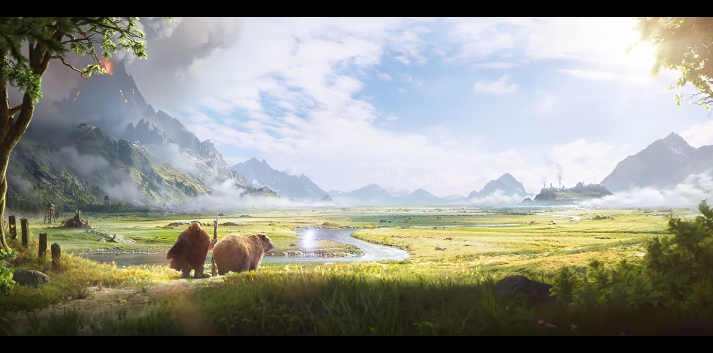

World of Warcraft: Forever — триумфальное возвращение классики и новый рекорд онлайна спустя 15 лет
Масштабный запуск World of Warcraft: Forever от Blizzard привлек рекордное количество игроков, обогнав показатели популярности классических серверов за последние полтора десятка лет.
Компания Blizzard Entertainment официально отрапортовала о грандиозном успехе своего нового проекта World of Warcraft: Forever, который за первые дни после релиза собрал у экранов больше еженедельных активных пользователей, чем оригинальная игра видела за последние 15 лет. Согласно свежим данным разработчиков, проект смог не только вернуть ветеранскую аудиторию, но и привлечь совершенно новое поколение игроков, соскучившихся по хардкорному касту классической MMORPG. Успех релиза уже называют одним из самых мощных камбэков в истории жанра, сопоставимым с золотой эрой дополнения Wrath of the Lich King.
Помимо баснословных цифр онлайна, команда Blizzard активно делится подробностями грядущих обновлений и системных переработок. В частности, геймдиректора раскрыли кардинально измененную систему PvP Honor Grind, которая должна избавить игроков от изнурительного гринда прошлых лет и сделать соревновательные сезоны более динамичными и справедливыми. Критики и профильные СМИ, включая порталы Eurogamer и GameSpot, отмечают, что разработчики прислушались к многолетним жалобам сообщества, переосмыслив баланс фракций и систему наград на полях сражений.
Исторически франшиза World of Warcraft переживала разные периоды — от пиковых значений в миллионы подписчиков в эпоху Cataclysm и Mists of Pandaria до затяжных кризисов и спадов интереса на фоне спорных сюжетных решений в современных аддонах. Возврат к истокам в рамках концепции Forever стал для Blizzard спасательным кругом, доказавшим жизнеспособность ностальгической модели распространения контента. Подобный подход уже успешно обкатывался на классических серверах, однако новая итерация предлагает куда более глубокую переработку устаревших механик под современные стандарты качества.
Для индустрии в целом World of Warcraft: Forever демонстрирует мощный запрос аудитории на проверенную временем классику без навязанных современных тенденций. Если Blizzard удастся удержать текущий темп поддержки контента и избежать серверных коллапсов в разгар первых PvP-сезонов, проект имеет все шансы оставаться главным флагманом жанра MMORPG еще долгие годы.
Источники: eurogamer.net, gamespot.com.